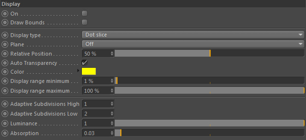
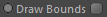
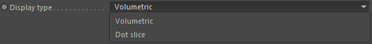
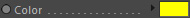
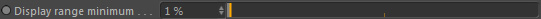
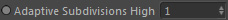
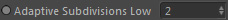
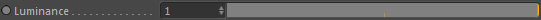
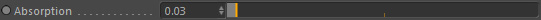

Display

Draw Bounds

Turn ON/OFF the editor display of the channel's adaptive bounds.
Display type

Either draws each grid cell as a volumetric preview of the data or as a slice of colored dots
with their color adapted to the data the channel grid holds.
Example
A smoke (scalar) channel will contain grid cell values between 0 (no smoke) and 1.0 (full of smoke) and a dot with 1.0 smoke density will be displayed as a white dot while an empty cell will be shown as a black dot.
A smoke (scalar) channel will contain grid cell values between 0 (no smoke) and 1.0 (full of smoke) and a dot with 1.0 smoke density will be displayed as a white dot while an empty cell will be shown as a black dot.
Color

The color of the displayed dots. Only used in Dot Display mode.
Display range minimum

This value is only used in 'Dot Slice' display mode
and defines the minimum value of cells that are displayed.
Adaptive Subdivisions High

During playback the display resolution of the channel can be different. This is advantageous especially
when loading caches in the editor and speeding up display drawing of the data.
This defines the resolution that is used when there is no playback, which should be the higher resolution (hence the naming).
Adaptive Subdivisions Low

During playback the display resolution of the channel can be different. This is advantageous especially
when loading caches in the editor and speeding up display drawing of the data.
This defines the resolution that is used when there is playback taking place, which should be the lower resolution (hence the naming).
Luminance

This is only used in Volumetric display mode and controls the luminance of the display.
Absorbtion

This is only used in Volumetric display mode and controls the absorption of the display.